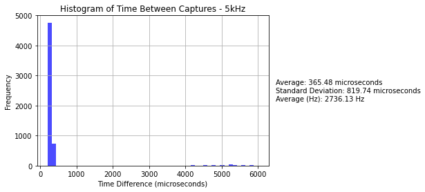
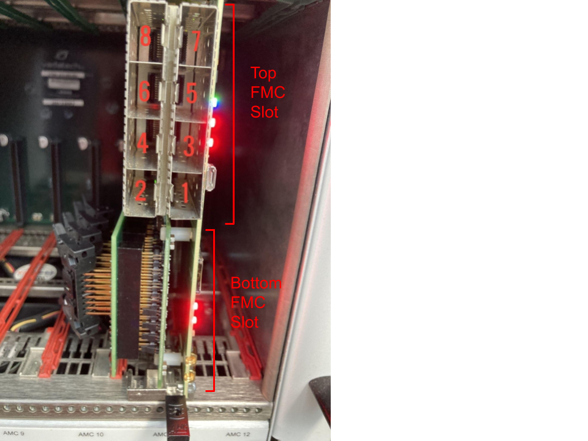

Miscellaneous Information
Additional Notes
If you're feeling desperate (or perhaps lucky), you can sift through Jack Carlton's work notes. I warn you that these are not well organized and contain lots of information not about this DAQ. However, they do contain some documentation of my assembly and troubleshooting of this DAQ.
What is (was) g-2?
g-2 was an experiment to that examined the precession of muons that are subjected to a magnetic field to test the standard model's prediction of muon g factor. Because many of the g-2 collaborators now work on PIONEER, it is convienent to repurpose the data acquisition system used for g-2 for PIONEER test stands.
Initialism Cheatsheet
| Initialism | Meaning | Example |
|---|---|---|
| DAQ | Data Acquisition | |
| ADC | Analog-to-Digital Converter | |
| 10GbE | 10 Gigabit Ethernet | |
| AFE | Analog Front End | |
| FPGA | Field Programmable Gate Array | |
| FMC | FPGA Mezzanine Card | FC7 SFP Interface |
| CPU | Central Processing Unit | Intel Core i7-12700K |
| GPU | Graphics Processing Unit | NVIDIA A5000 |
| uTCA (µTCA) | Micro Telecommunications Computing Architecture | |
| WFD | Waveform Digitizer | WFD5 |
| FC | Flexible Controller | FC7 |
| AMC | Advanced Mezzanine Card | AMC13 (also FC7 and WFD5) |
| MCH | MicroTCA Carrier Hub | |
| DDR | Double Data Rate | DDR3, DDR4 (RAM) |
| PCIe | Peripheral Component Interconnect Express | PCIe2, PCIe3, ... |
| SFP | Small Form-factor Pluggable | Finisar SFP transceiver |
| SFP+ | Enhanced Small Form-factor Pluggable | Avago SFP+ transceiver |
| CLI | Command Line Interface | |
| TTC | Timing, Trigger, and Control | |
| MTU | Maximum Transmission Unit | |
| IP | Internet Protocol |
Differential Signals

Differential signals offer several advantages over single-ended signals:
- More resistant to noise: Differential signaling reduces susceptibility to noise interference, resulting in cleaner signal transmission.
- Lower supply voltages: Differential signaling allows for the use of lower supply voltages (like Low Voltage CMOS (LVCMOS) at 3.0–3.3V), which can lead to reduced power consumption.
- Higher operating frequencies: Due to better noise immunity and lower voltage swings, differential signals enable higher operating frequencies in electronic circuits.
Read more about differential signaling on Wikipedia.
Limitations of Meinberg Card
The meinberg card seems to be limited to rates of ~2.5KHz. While this is not a critical (run ending) issue, the meinberg will have to "catch up" at the end of runs. It may also need to be removed from the event buider (i.e. change the buffer it writes on to something that doesn't include "BUF" at the beginning).
In a study performed on the meinberg card, we found it behaves strangley at high rates. Sometimes it "misses" events and sometimes is has long wait periods. See the plots below.


Port Forwarding an SSH Connection
In many cases, you will need to access a web server running on a remote machine that has no Graphical User Interface (GUI). This can be done securely using SSH port forwarding. Below are instructions for setting up port forwarding on a RHEL Linux machine so you can view a webpage served on localhost:8080 from your local machine with a GUI (ex. laptop).
Prerequisites
- SSH access to the remote RHEL Linux machine.
- An SSH client on your local machine. e.g.
sshcommand in a terminal, (you can also use PuTTY on Windows though I would not recommend this; you can still use ssh on windows). - Ensure the remote machine is configured to allow SSH connections. The SSH service should be running, and the firewall should permit SSH traffic (usually on port 22).
Instructions
1 Ensure SSH service is running on the remote machine:
sudo systemctl start sshd
sudo systemctl enable sshd
2 Configure the firewall to allow SSH connections on the remote machine:
sudo firewall-cmd --permanent --add-service=ssh
sudo firewall-cmd --reload
3 Open a terminal on your local machine.
4 Establish an SSH connection with port forwarding:
Use the following command to create an SSH tunnel. Replace user with your username on the remote machine and remote_host with the IP address or hostname of the remote machine.
ssh -L 8080:localhost:8080 user@remote_host
This command forwards your laptop's port 8080 to the remote machine's port 8080. Here's a breakdown of the command:
-L 8080:localhost:8080: Specifies the local port (8080) to be forwarded to the remote port (8080onlocalhostof the remote machine).user@remote_host: The SSH login to the remote machine.
5 Access the webpage:
Open a web browser on your laptop and navigate to:
http://localhost:8080
You should see the webpage served by the remote machine on port 8080.
Example
If you want to access the root user on a machine with IP 192.168.50.10:
ssh -L 8080:localhost:8080 root@192.168.50.10
After running this command, open a browser on your laptop and go to http://localhost:8080 to view the webpage hosted on the remote machine.
Notes
- Ensure that the web server on the remote machine is configured to listen on
localhost:8080and is running. - If port
8080is already in use on your local machine, you can use a different local port (e.g.,9090) by changing the command to-L 9090:localhost:8080and then accessinghttp://localhost:9090on your laptop.
This setup allows you to securely access the web server running on your remote RHEL machine from your local laptop using SSH port forwarding.
2023 PSI LYSO Testbeam DAQ Installer
There is a gm2daq-installer that has been tested on RHEL7 systems. This will attempt to install the listed packages below. This installer's purpose was to streamline installation of the 2023 PSI LYSO testbeam usage of the DAQ. WARNING: As some of these packages have been updated, the installer may fail. Use this at your own disgression. In particular, I don't expect the unpacker, publisher, meinberg, and gm2daq software to install correctly. If you use this tool, it would be best to install those by hand if needed by following the links. Furthermore on RHEL9 systems (such as ALMA9) , the distributed pre-compiled binaries are more up to date, which simplifies the installation process greatly. As a result, I would only suggest using the installer for RHEL7 systems (such as SL7 or CentOS7).
To attempt to install everything with the installer:
git clone git@github.com:PIONEER-Experiment/gm2daq-installer.git
cd gm2daq-installer
./install.sh
List of Installed Software
If you navigate to
cd gm2daq-installer/subprocess_scripts
you can install packages individually:
| Script Name | Description |
|---|---|
install_epel-release.sh |
Installs EPEL Release |
install_openssl-devel.sh |
Installs OpenSSL Development Libraries |
install_cmake.sh |
Installs CMake |
install_cmake3.sh |
Installs CMake3 |
install_readline.sh |
Installs Readline Development Tools |
install_root.sh |
Installs ROOT (pre-compiled binary) |
install_erlang.sh |
Installs Erlang |
install_zlib.sh |
Installs zlib Development Libraries |
install_devtoolset-8.sh |
Installs Devtoolset-8 |
install_devtoolset-11.sh |
Installs Devtoolset-11 |
install_rh-python36.sh |
Installs Python 3.6 |
install_libXft.sh |
Installs libXft Development Libraries |
install_libXpm.sh |
Installs libXpm Development Libraries |
install_libXt.sh |
Installs libXt Development Libraries |
install_libXext.sh |
Installs libXext Development Libraries |
install_patch.sh |
Installs Patch Development Tools |
install_libtool.sh |
Installs Libtool Development Tools |
install_meinberg_driver.sh |
Installs Meinberg Driver |
install_midas.sh |
Installs MIDAS |
install_pugixml.sh |
Installs pugixml Development Libraries |
install_boost_1_53_0.sh |
Installs Boost 1.53.0 |
install_cactus.sh |
Installs Cactus |
install_gm2daq.sh |
Installs gm2daq |
install_root_from_source.sh |
Installs ROOT (from source) |
install_boost_1_70_0.sh |
Installs Boost 1.70.0 |
install_zeroMQ.sh |
Installs ZeroMQ Development Libraries |
install_cppzmq.sh |
Installs C++ ZeroMQ |
install_eigen.sh |
Installs Eigen Development Libraries |
install_unpacker.sh |
Installs Midas Data File Unpacker |
install_publisher.sh |
Installs Midas Data Publisher |
you can also run
./install.sh --skip root_from_source,zeroMQ,...
to skip certain packages, for example. From the list above, remove the install_ and .sh parts and add it to the comma seperated list following the --skip flag to skip it. For instance, I would recommend trying:
FC7 Labeling

These labelings are particularly useful when configuring the CCC ODB settings
Using Screens in Linux
Screens are useful for running the DAQ because it allows you start and view multiple frontends on one terminal. You can read more on this webpage for example. Below are a few useful screen commands:
Starting a Screen
screen -S <session_name>
Listing Screens
screen -ls
Stopping a Screen
To stop a screen session, first list all sessions to find the session ID:
screen -ls
Then, stop the desired screen session:
screen -X -S <session_id> quit
Attaching to a Screen
screen -r <session_name>
Detaching from a Screen
To detach from a screen session you have attached to, press Ctrl + a and d. This will return you to your previous shell session.
Scrolling up in a Screen
To scroll up in a screen session, press Ctrl + a and then [. Use the arrow keys to navigate. To exit scroll mode, press q.
Getting LD_LIBRARY_PATH Into a Screen Session
For some reason, stuffing LD_LIBRARY_PATH into a screen session is convoluted. To copy your current shell sessions LD_LIBRARY_PATH environment variable into a screen session, you need to edit your .screenrc file for the profile you launch the screen from. Simply run these two commands:
touch ~/.screenrc
echo 'shell -/bin/bash -c "export LD_LIBRARY_PATH=$LD_LIBRARY_PATH && exec /bin/bash"' >> ~/.screenrc
Now for every new screen session, your LD_LIBRARY_PATH environment variable will be copied over from your current shell session to the new screen session. This is useful when you have custom libraries added to your LD_LIBRARY_PATH; the environment setup script used in the DAQ installation guide adds some custom libraries LD_LIBRARY_PATH.
The N.A.T. MCH
Overview
An alternative to the VadaTech MCH, it has the same functionality.
Configuration
See NAT MCH manual for more details. Depending on the NAT MCH version, you may be able to ssh into the NAT MCH.
In any event, you can configure the NAT MCH with telnet
sudo yum install telnet
telnet 192.68.1.41
From there you can follow the prompts to configure the NAT MCH. If you are having trouble finding the NAT MCH IP try pinging or scanning the network.
Finisar SFP vs. Avago SFP+
SFP+s (such as Avago SFP+s) do not work with the FC7 to AMC13 link; an SFP (such as a finisar SFP) is needed. Similarly, the 10GbE links from AMC13 to the DAQ computer must use SFP+s.
Bank Signals

Copies of D0-D3 triggers are sent out of D0-D3, while D4-D7 should be configured to be input signals. The trigger input should go to D6 (It does not have to be 1kHz). A 40MHz clock should go in D7.
CentOS7 Related Installation Steps
CentOS7 has reached it's EOL. Many of these steps will no longer work because package manager repo links are dead. They are here for legacy referencing purposes only.
Development Tools
Overview
These tools include compilers, libraries, and other utilities that facilitate software development and installation.
Installation Guide
1 Install yum package manager
sudo dnf install yum
2 Update the package index:
sudo yum update
3 Enable the EPEL repository:
sudo yum install epel-release
4 Install Development Tools and Dependencies:
sudo yum groupinstall "Development Tools"
sudo yum install cmake gcc-c++ gcc binutils libX11-devel libXpm-devel libXft-devel libXext-devel
5 Install Python
sudo yum install python3
Note: CentOS7 may not have python3 available in base repositories, you can install via yum install -y rh-python36.
ROOT
Overview
ROOT is an open-source data analysis framework developed by CERN. It is widely used in high-energy physics for data processing, statistical analysis, visualization, and storage. It is needed for some features of Midas.
Installation Guide (Build from source)
General installaiton guides are provided by ROOT at their Installing ROOT and Building ROOT from source pages.
1 Example building latest stable branch from source
git clone --branch latest-stable --depth=1 https://github.com/root-project/root.git root_src
mkdir root_build root_install && cd root_build
cmake -DCMAKE_INSTALL_PREFIX=../root_install ../root_src # && check cmake configuration output for warnings or errors
cmake --build . -- install -j4 # if you have 4 cores available for compilation
source ../root_install/bin/thisroot.sh # or thisroot.{fish,csh}
Note: Adjust the ROOT version and the download URL as needed. Always check for the latest version on the official ROOT website. Furthermore, if you are not building from source you are installing precompiled binaries, which may not be up to date versions of ROOT. For specific versions, you may need to build root from source.
IPBus (Cactus)
Overview
IPBus, part of the Cactus framework, is a protocol for remote control and monitoring of hardware devices over Ethernet. It's commonly used in high-energy DAQ systems.
Installation Guide
1 Remove previous version (if applicable):
sudo yum groupremove uhal
2 Download yum repo file:
sudo curl https://ipbus.web.cern.ch/doc/user/html/_downloads/ipbus-sw.centos7.repo -o /etc/yum.repos.d/ipbus-sw.repo
3 Install uHAL:
sudo yum clean all
sudo yum groupinstall uhal
Note: I personally had trouble getting this to work on CentOS7 and had to resort to building from source (see below).
Example building from source
See Compiling and installing from source, an example is below:
sudo yum install pugixml-devel
git clone --depth=1 -b v2.7.3 --recurse-submodules https://github.com/ipbus/ipbus-software.git
cd ipbus-software
make -j$(nproc) EXTERN_BOOST_INCLUDE_PREFIX="/opt/boost/include" EXTERN_BOOST_LIB_PREFIX="/opt/boost/lib" EXTERN_PUGIXML_INCLUDE_PREFIX="/usr/local/include" EXTERN_PUGIXML_LIB_PREFIX="/usr/local/lib64/"
sudo make install -j$(nproc)
Note: You may not need to specify EXTERN_BOOST_INCLUDE_PREFIX, EXTERN_BOOST_LIB_PREFIX, EXTERN_PUGIXML_INCLUDE_PREFIX, EXTERN_PUGIXML_LIB_PREFIX. Otherwise, you may need to find where pugixml and boost were installed and replace the paths above respectively.